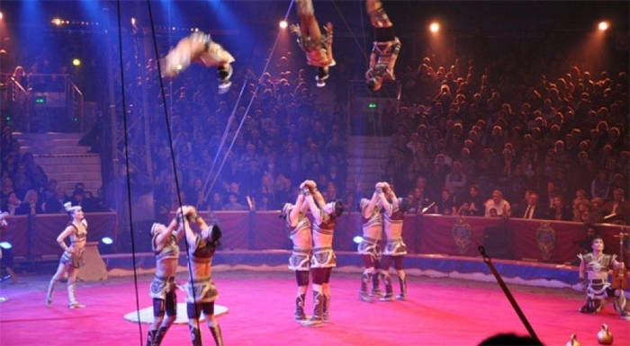
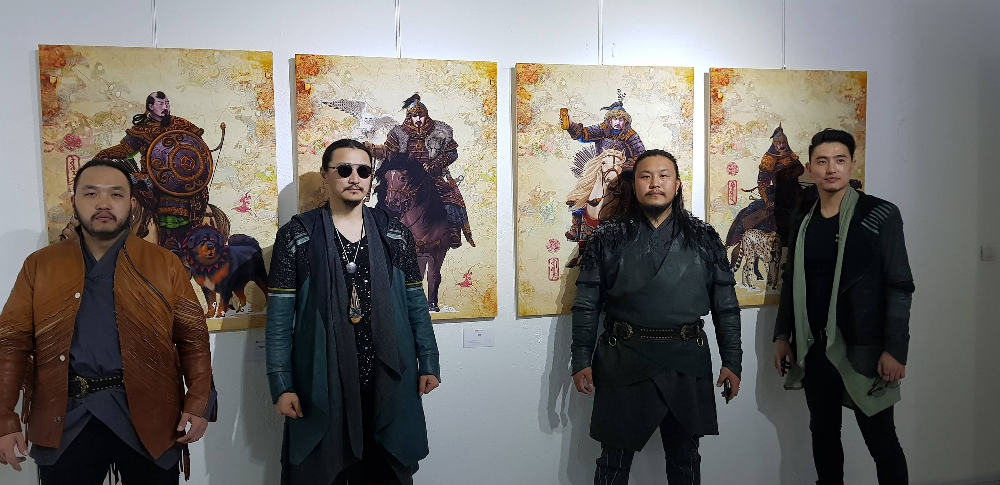

Sport
Улаанбаатар /МОНЦАМЭ/. Монголын жүдо бөхийн шигшээ багийн эрэгтэй 12, эмэгтэй 9 тамирчин Франц улсын
Парис хотноо
хоёрдугаар сарын 8-9-нд болох “Их дуулга-2020” тэмцээнд оролцохоор бэлтгэл сургуулиа базааж байгаа юм.
Culture and Art
Хөх замбуулинд хүн болж төрсөн бид, монголчууд. Бидний туулж ирсэн цаг хугацаа, орон зай, бүтээж, бас
сөнөөж ирсэн юм
бүхэн. Эдгээрийн талаар авьяас билэгт бүтээн туурвигч оюун сэтгэлдээ уран зургийн аргаар хэрхэн бясалгав.
Technology
Glassdoor, True, PayScale, ZipRecruiter компаниудын хийсэн дундаж тооцооллоор 2020 онд Full-Stack
Developer жилийн
дундаж цалин $91,123 доллар байна. Үүнд, вебийн гадаад болон дотоод үйл ажиллагааг хариуцаж кодын
алдаа/bug/ олох
ажлууд ордог.
Culture and Art
Хоёр жил тутамд зохион байгуулагддаг олон улсын циркчдийн “А” зэрэглэлийн тэмцээнээс манай жүжигчид “Мөнгөн
арслан” цом хүртсэн байна.


Technology
Glassdoor, True, PayScale, ZipRecruiter компаниудын хийсэн дундаж тооцооллоор 2020 онд Full-Stack
Developer жилийн
дундаж цалин $91,123 доллар байна. Үүнд, вебийн гадаад болон дотоод үйл ажиллагааг хариуцаж кодын
алдаа/bug/ олох
ажлууд ордог.
Culture and Art
МУЗ-ийн “АМЖИЛТ, ТҮҮХ БҮТЭЭСЭН 20 ЖИЛ”-ийн ойн хүрээнд Монголын соёл урлагийн салбарын хөгжилд оруулсан
хувь нэмэр,
ололт амжилт, олон талт хамтын ажиллагааг өргөнөөр таниулж байгаа билээ.
Sport
“The Hu” хамтлагийн залуус Малайз, Индонез, Япон, Австрали, Шинэ Зеланд, Аргентин, Бразиль, Чили Улсад
хөгжмийн наадамд
оролцож, бие даасан тоглолт хийхээр төлөвлөжээ. Мөн АНУ-ын 30 гаруй хотод дахин болон шинээр тоглолтоо
хийх юм байна.
